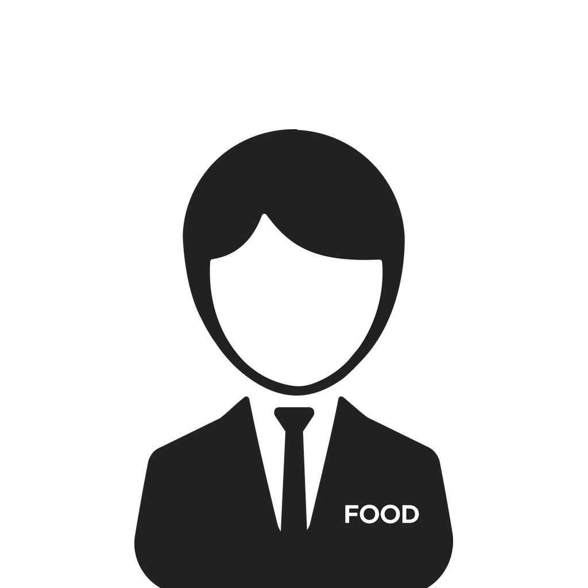

푸비웍스 앱 다운로드
푸드의비서 사내 포털을 컴퓨터 앱으로.
공지·업무 알림을 바탕화면으로 바로 받아요.
- 받은 Foobiworks-Windows.exe를 실행해요.
- 파란 'Windows의 PC 보호' 창이 뜨면 추가 정보 → 실행을 눌러요.
- 설치가 끝나면 푸비웍스가 열려요. 평소처럼 이름 + 코드로 로그인하면 끝!
회사 내부용 앱이라 처음 한 번 뜨는 정상 경고예요.
- 받은 Foobiworks-Mac.zip을 더블클릭해서 풀어요.
- 나온 푸비웍스 앱을 응용 프로그램 폴더로 끌어다 놓아요.
- 앱을 실행해요. 경고가 뜨면 시스템 설정 → 개인정보 보호 및 보안 → 아래쪽 그래도 열기를 눌러요.
- 평소처럼 이름 + 코드로 로그인하면 끝!
"손상되었습니다"라는 창이 뜨면 송다영 사무장에게 말해 주세요.
설치하고 나면
- 창의 ✕를 눌러도 꺼지지 않고 시계 옆 작은 아이콘으로 들어가요. 그래야 알림을 받아요.
- 컴퓨터를 켜면 자동으로 실행되고, 업데이트도 자동이에요.
- 시계 옆 아이콘 메뉴에 '알림: OOO님으로 받는 중'이 보이면 알림 연결 완료!